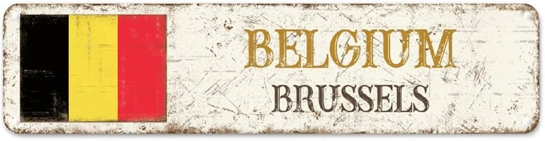

ALL THE HISTORY ABOUT BELGIUM
Ancient & Medieval Origins (Pre-15th Century)
- Belgae: The name "Belgium" comes from the Belgae, Celtic tribes conquered by Julius Caesar, whose territory became the Roman province of .Gallia Belgica
- Frankish Rule: After Rome's fall, Germanic Franks settled the area.
- Low Countries: The region, along with the Netherlands, became known as the Low Countries, flourishing under the Dukes of Burgundy as centers for trade and textiles (Flanders, Bruges, Ghent).

Habsburg Rule & Division (15th-18th Century)
-
Habsburg Inheritance:Through marriage, the territory passed to the Habsburgs, becoming part of the Spanish Netherlands under Spanish rule.
-
Religious Conflict:The Protestant Reformation divided the region; the northern provinces broke away to form the Dutch Republic, while the southern, Catholic provinces (modern Belgium/Luxembourg) remained Spanish.
-
Austrian & French Control:After the War of Spanish Succession, control shifted to Austria, then France during the Napoleonic Wars.
Independence & Industrialization (19th Century)
-
United Kingdom of the Netherlands:After Napoleon, the Congress of Vienna (1815) reunited the south with the Netherlands.
-
Belgian Revolution (1830):Cultural, linguistic (Dutch vs. French), and economic differences sparked a revolution, leading to independence as a constitutional monarchy.
-
Industrial Power:Belgium became the first continental European nation to industrialize, especially in French-speaking Wallonia.
20th Century: Wars & Federalism
-
World Wars:Despite neutrality, Germany invaded Belgium in both WWI and WWII due to its strategic location.
-
Colonialism:King Leopold II established the brutal Belgian Congo as a personal colony, later taken over by the state.
-
European Integration:Belgium became a founding member of the European Coal and Steel Community (ECSC) and the EU, with Brussels as its capital.
-
Federalization:Growing linguistic tensions between Dutch-speaking Flanders and French-speaking Wallonia led to state reforms, transforming Belgium into a federal state with three regions (Flanders, Wallonia, Brussels) by 1993.
Paola -Mafer-Mehir-Diego-Mateo-Damian.
©copyright 2026